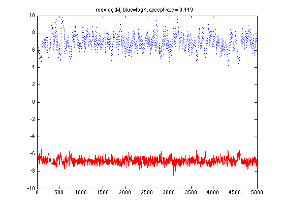
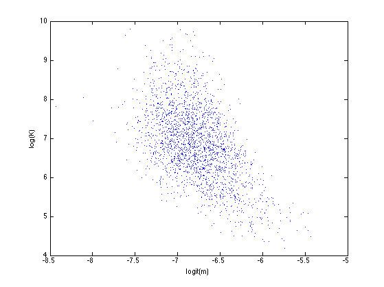
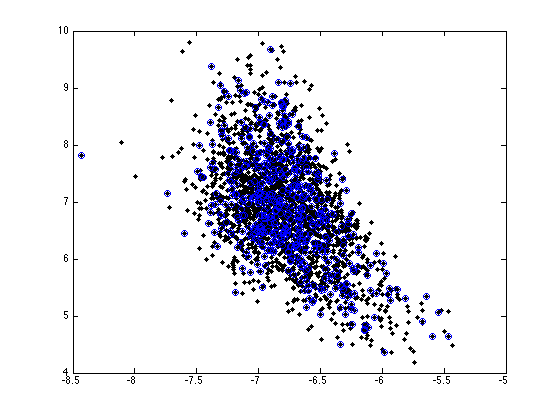
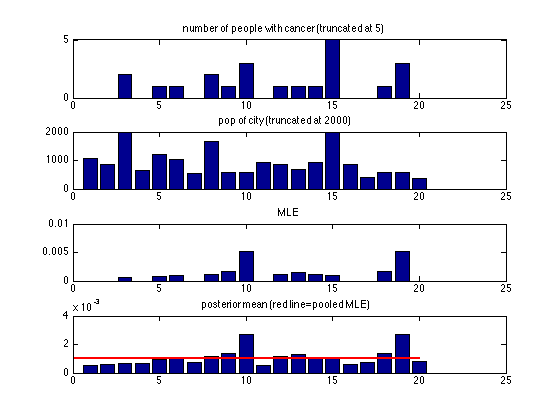
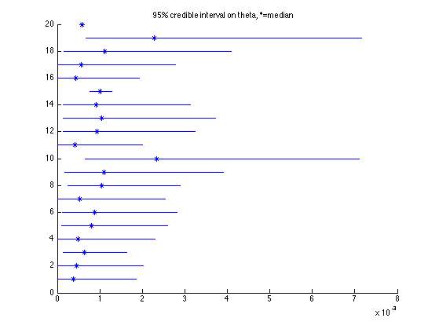

Hierarchical Bayesian Estimation of Some Binomial Proportions
Johnson and Albert p67
Contents
% This file is from pmtk3.googlecode.com function cancerRatesMh()
Data
p24
data.y = [0 0 2 0 1 1 0 2 1 3 0 1 1 1 54 0 0 1 3 0];
data.n = [1083 855 3461 657 1208 1025 527 1668 583 582 917 857 ...
680 917 53637 874 395 581 588 383];
Hyper parameters
hparams.am = 0.01; hparams.bm = 9.99; % JA p25 says 9.9, but then prior precision is not 10 xinit = 0.1*randn(1,2); % initial state
MCMC
Nsamples = 5000;
burnin = 500;
SigmaProp = 0.3*eye(2); % if smaller, accept rate gets too high
setSeed(1);
model.mu = [0 0];
model.Sigma = SigmaProp;
proposal = @(x) (x + gaussSample(model));
targ = @(x)target(x, data, hparams);
[x, naccept] = metropolisHastings(targ, proposal, xinit, Nsamples+burnin);
x = x(burnin+1:end, :);
acceptRatio = naccept/ (Nsamples + burnin);
Diagnostics
trace plot
figure; plot(x(:,1), 'r-'); hold on plot(x(:,2), 'b:'); title(sprintf('red=logitM, blue=logK, accept rate = %5.3f', acceptRatio));
Plot of Posterior
samples.m = sigmoid(x(:,1)); samples.K = exp(x(:,2)); samples.logitm = x(:, 1); samples.logK = x(:, 2); figure; plot(samples.logitm, samples.logK, '.'); xlabel('logit(m)'); ylabel('log(K)')
plot(samples.logitm, samples.logK, 'k.', 'markersize', 12); line(samples.logitm(1:10:end), samples.logK(1:10:end), 'marker','o','linestyle','none');
Posterior means and CI
d = length(data.n); % ncities; samples.theta = zeros(Nsamples, d); post.meantheta = zeros(d, 1); post.CItheta = zeros(d, 2); thetaMLE = zeros(d, 1); for i=1:d thetaMLE(i) = data.y(i)/data.n(i); as = data.y(i) + samples.K .* samples.m; bs = data.n(i) - data.y(i) + samples.K .* (1-samples.m); samples.theta(:,i) = betaSample(struct('a',as, 'b', bs)); post.meantheta(i) = mean(samples.theta(:,i)); post.CItheta(i,:) = quantilePMTK(samples.theta(:,i), [0.025 0.975]); post.mediantheta(i) = quantilePMTK(samples.theta(:,i), [0.5]); end thetaPooledMLE = sum(data.y)/sum(data.n)
thetaPooledMLE = 9.9331e-04
Bar Plot
figure; subplot(4,1,1); bar(data.y); title('number of people with cancer (truncated at 5)') set(gca,'ylim',[0 5]) subplot(4,1,2); bar(data.n); title('pop of city (truncated at 2000)'); set(gca,'ylim',[0 2000]) subplot(4,1,3); bar(thetaMLE);title('MLE'); subplot(4,1,4); bar(post.meantheta);title('posterior mean (red line=pooled MLE)') hold on;h=line([0 20], [thetaPooledMLE thetaPooledMLE]); set(h,'color','r','linewidth',2)
95% credible interval
figure; hold on; for i=1:d q = post.CItheta(i,1:2); line([q(1) q(2)], [i i]); median = post.mediantheta(i); plot(median,i,'*'); end title('95% credible interval on theta, *=median')
end function logp = target(x, data, hparams)
Target
logitM = x(:,1); logK = x(:,2); m = sigmoid(logitM); K = exp(logK); ncases = length(data.n); logp = (hparams.am-1).*log(m) + (hparams.bm-1).*log(1-m) ... -2*log(1+K) + sum(betaln(K'*m+data.y, K'*(1-m)+data.n-data.y)) ... -ncases*betaln(K'*m, K'*(1-m));
end